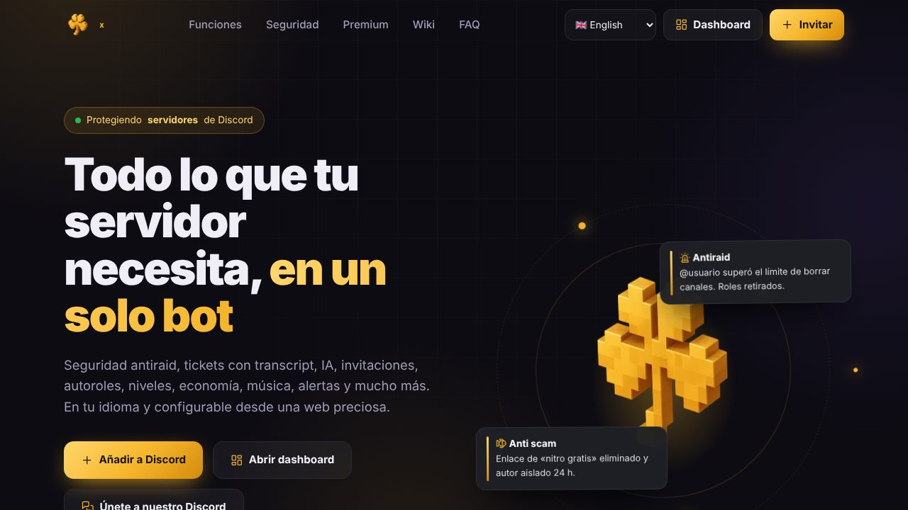

Clovex Services
Mi proyecto propio: un bot de Discord todo en uno con su propia web. Seguridad y antiraid, backups, tickets, música, IA, alertas de redes, economía y juegos, todo configurable desde la dashboard y en 6 idiomas.
Webs: clovex.cc · clovex.cc/dash · clovex.cc/wiki · clovex.cc/musica
Seguridad y antiraid
Límites por minuto, whitelist, anti-spam, anti-links y castigos automáticos para proteger el servidor.
Backups y clonador
Copias del servidor completo (canales, roles y mensajes) para restaurarlo o llevarlo a otro.
Tickets
Paneles con formularios, transcripts con estilo de Discord, valoraciones y recordatorios.
Música
Motor Lavalink, reproductor web con letras sincronizadas, ecualizador, favoritas y playlists de Spotify y más.
Inteligencia artificial
Chat que conoce el servidor, entiende imágenes, busca en internet y crea imágenes.
Alertas de redes
Avisos de YouTube, Twitch, Kick, TikTok, X e Instagram con el vídeo debajo.
Economía y arcade
Economía, niveles y una sala de juegos en la web con tragaperras, ruleta, plinko y más.
Dashboard
Todo se configura desde la web: mensajes editables con vista previa, 2FA, registros y estadísticas.
Planes y bots propios
Plata, Diamante y Diamante Plus, con bot personalizado con el nombre y la foto del cliente.